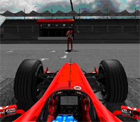

|
Welcome to the Kuali Test Drive. You’ll find everything here to begin exploring the Kuali Financial System – from menus and Web applications to screenshots and contacts. It's your opportunity to try out the initial modules of the Kuali Financial System (KFS) – the basic parts of an enterprise-level financial system for higher education. You can create Chart entries, investigate the General Ledger, perform common business transactions, and more. And all of these modules work on realistic demonstration data. The Kuali Project is making the Test Drive available to demonstrate the functionality developed to date and to underscore the success of its collaboration. We also actively solicit your opinions, suggestions, and interest in the results and operations of the Project. Since this is a public site using only demonstration data, we ask that you do not enter confidential information or expect any data to be maintained.
|